CentOS7安装MySQL5.7
参考：MySQL官网
制作人：小邹[yw_forgit@163.com]
CentOS7直接yum安装，会安装mariadb，这是mysql的一个分支。
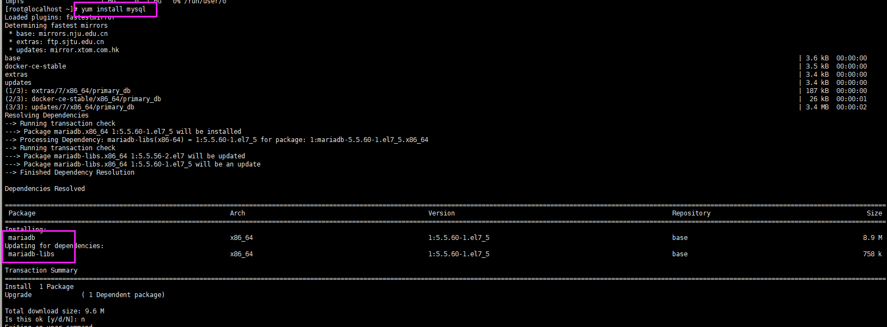
进入官网之后，点击Download，进入下图，找到社区办的MySQL
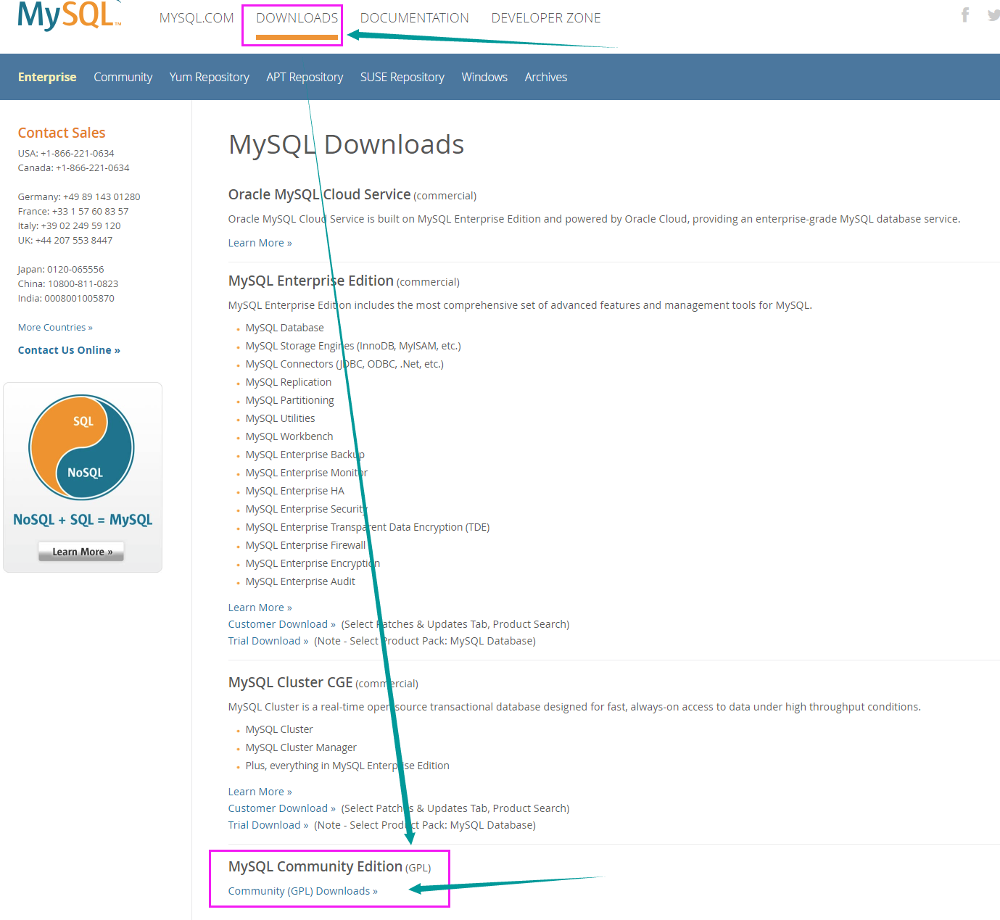
找到yum源
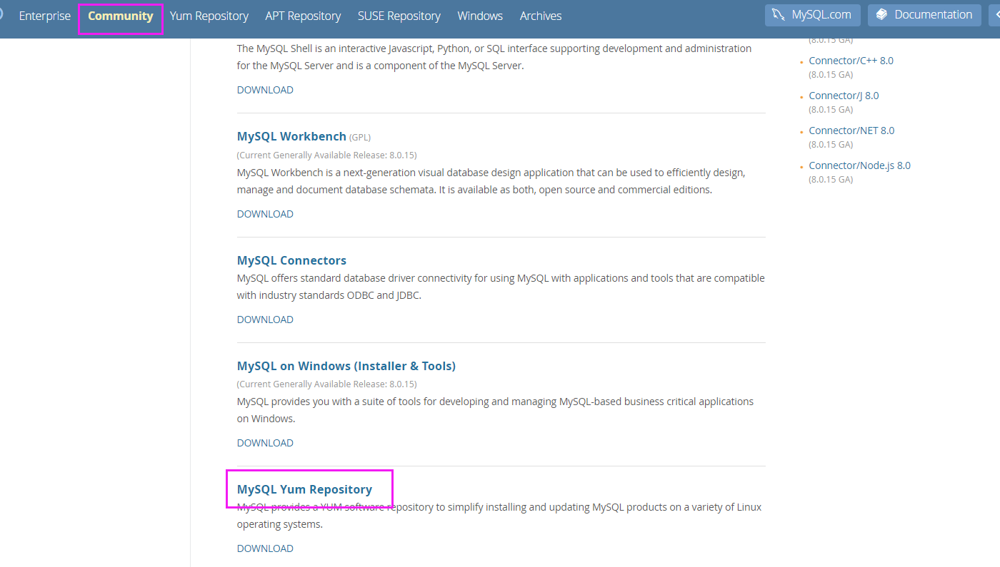
找到centos7的yum的rpm，点击下载（这个yum包含多个版本，最新版是8.0的）
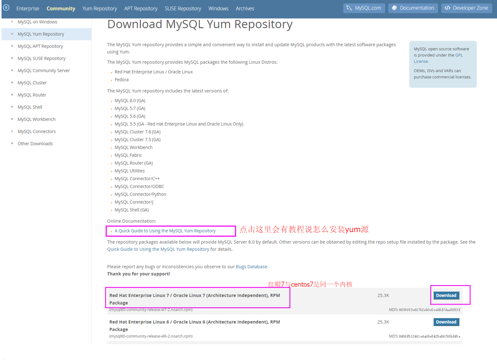
最后这个链接就是我们要的，不确定是不是，可以点击下载试试
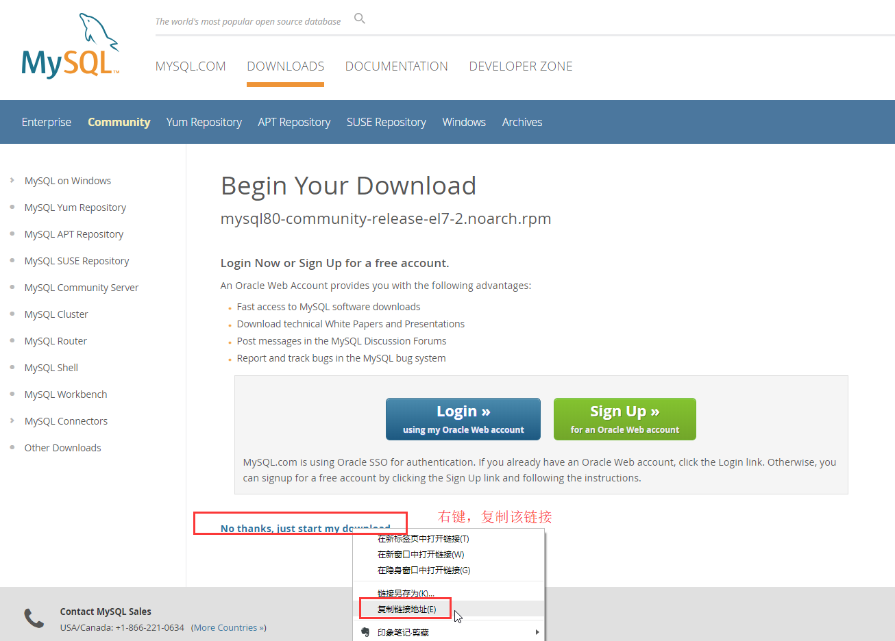
复制的链接
https://dev.mysql.com/get/mysql80-community-release-el7-2.noarch.rpm
下载yum源的rpm包
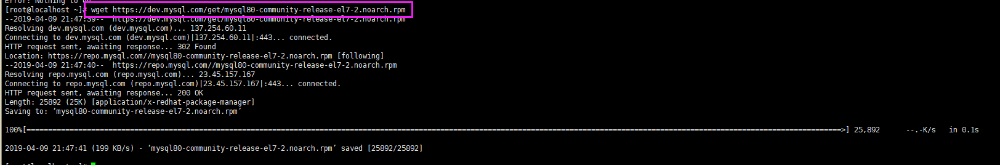
可以看到下载当前目录了
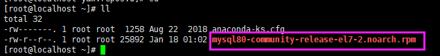
安装yum的rpm
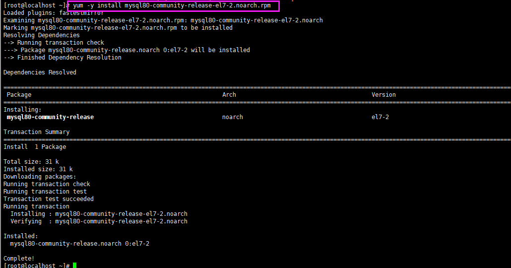
然后就能查看一下yum
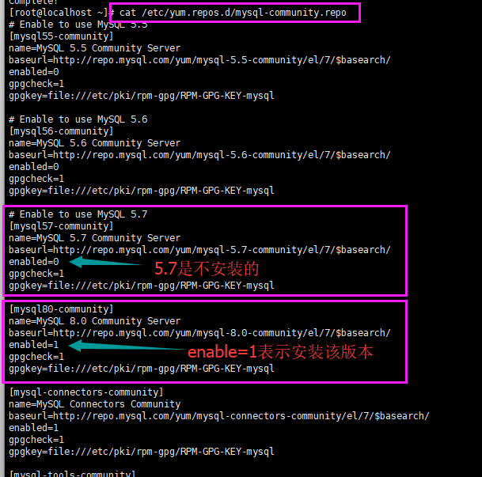
但是这里我安装5.7版的，故要做一些修改，可以直接把8.0的enable设置为0，把5.7的enable设置为1，这样子使用yum install
mysql-community-server 安装就默认安装5.7了，否则会安装8.0。
除了上面的方法，官方还提供了另外的命令操作
|
// 不启用8.0版本的 yum-config-manager --disable mysql80-community // 启用5.7版本的 yum-config-manager --enable mysql57-community |
操作这两条命令
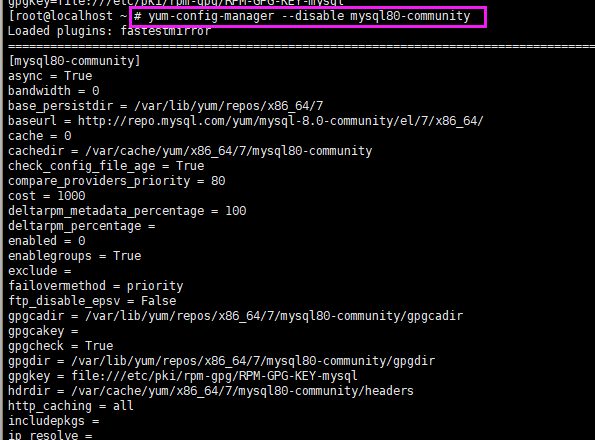
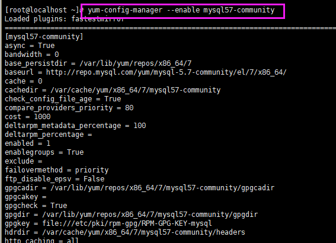
再cat一下，可以看到5.7是enable=1了
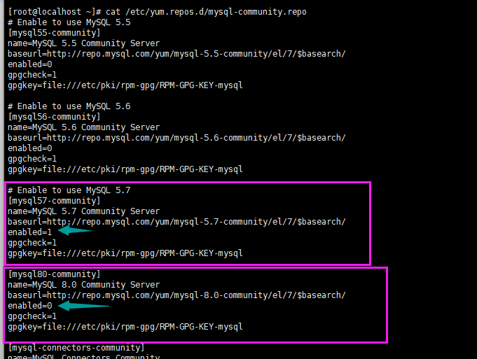
也可以使用如下命令，看看启用了哪个版本
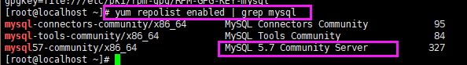
安装
yum install
mysql-community-server
有个EL7的概念，EL是Red Hat Enterprise Linux的缩写，EL7就是Red Hat7版本、CentOS7版本。
对于EL7平台，官方推荐首选用如下命令启动
systemctl start mysqld.service
查看状态命令（首选）
systemctl status mysqld.service
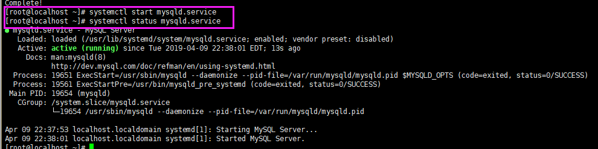
5.7版本开始，默认会给我们一个root账户的临时密码，通过mysqld.log可以查看到。注意，xshell的显示可能不能肉眼区分零或者大写字母O，复制到其他文本查看即可。
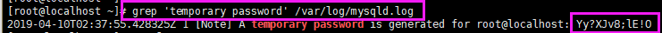
使用root账户登录mysql，密码就是那个临时密码。登录成功会进入MySQL的交互shell。
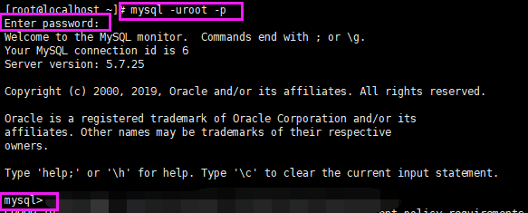
更改root的密码（准确来说是本地访问数据库的root里面，即root'@'localhost），注意，MySQL默认使用validate_password 插件，密码至少一个大写字母、一个小写字母、一个数字、一个特殊字符，并且总长度至少为8个字符。
|
ALTER USER 'root'@'localhost' IDENTIFIED BY 'xxxxxx'; |
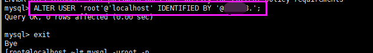
修改完了，可以试下重新登录。
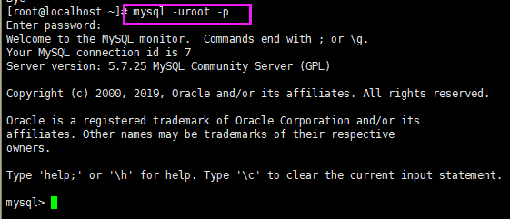
如果没有进行授权，那么只能是mysql所在的本机访问mysql，而我的mysql在centos7的物理机上，我的win10要访问就无法访问了，故要授权。
root用户本地登录之后，可以看到有个user表
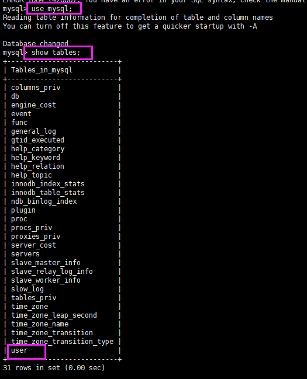
操作数据库，进行授权。由于是开发用于测试，所以我这都设置为%，即所有ip都可以访问。
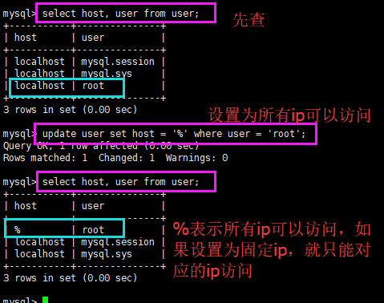
最后要清理一下缓存。
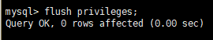
查看已开放的端口列表
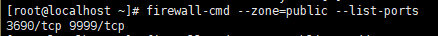
永久开放3306端口
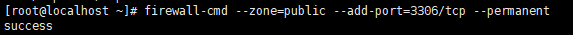
重新载入防火墙配置
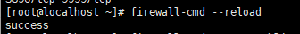
再查看。
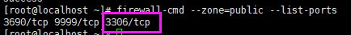
然后就可以在我的win10上访问mysql了。
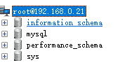